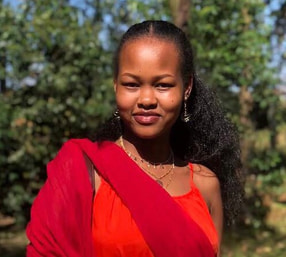

My name is Tiffany. I was born in Kenya and live with my family in Nairobi. I come from a big family of six. To pass time, I like visiting art galleries and cute cafes. I also prefer to write in my journal when I'm not busy studying. I love flowers and nature, you could say my aesthetic is "earth girl". I am very interested in investigative media like TV series and documentaries.
Home
About Me
Student Photo

Web Certificate Courses
The total credits for courses listed above is 0